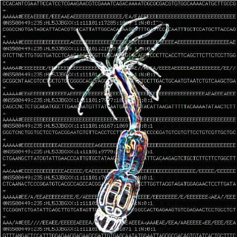
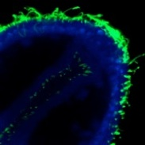

Research

Current Projects
Comparitive transcriptomics in Nematostella
Regeneration, as it restores missing tissue, is thought to employ processes originally used during embryonic development. If so, how does injury trigger those processes? Furthermore, are the ensuing genetic interactions similar to those of embryonic development? This project explores the mechanistic basis of regeneration by comparing the gene regulatory networks (GRN) governing regeneration and development. To achieve this, we use the developmental model system Nematostella vectensis. This sea anemone can regrow half its body when bisected. Here we compare embryonic and regeneration RNAseq data sets to examine the global similarities and differences in transcription during these two processes. Using these data we are able to construct co-expression networks driving embryogenesis and regeneration and identify modules of genes that are conserved between these two processes. We have found that transcriptionally, regeneration is a modest process, using a small fraction of the genes deployed during embryogenesis. Among these genes however we are able to identify embryonic modules that are re-used during regeneration. Finally, we have begun to validate these modules by performing knockdowns and constructing sub-networks that could be used to predict the regenerative capacity of other organisms or tissues.

A Wnt directed network module to activate regeneration
Following injury, for example, the loss of a limb, mammals undergo a stereotypical process of wound healing after which growth stops and a scar forms (and the poor animal is left minus a limb). Other organisms including Axolotls, Zebrafish and Nematostella are able to transition from this stage of wound healing into a regenerative state. Achieving this wound healing to regeneration transition is a critical event if the goal is to regrow a missing body part, so how does this work? Nematostella is beginning to give us some clues. We know that wound healing occurs in Nematostella and that it does not rely on cell-proliferation. Regeneration in Nematostella however is a proliferation intense process. Key to activating this proliferation is Wnt signalling and I believe this to be the key to activating the regenerative program. I am currently using various tools including CRISPR to understand the spatial and temporal requirements of Wnt signalling and how it is responsible for coordinating the earliest events of the regenerative program. The aim of this project is to identify the gene regulatory subnetwork that activates regeneration.
Previous Projects
Hedgehog signalling and ciliary trafficking in the sea urchin embryo
A relatively small number of signalling pathways govern the early patterning processes of metazoan development. Since most animals use the same pathways, the architectural changes made over time to these few signaling pathways offers unique insights into the evolutionary process. In the case of Hh signaling, two very divergent mechanisms of pathway transduction have evolved. In vertebrates, effective signaling relies on the primary cilium, a specialized cell-surface organelle. In sharp contrast, protostomes, including flat worms and fruit flies, cilia are not necessary for Hh signal transduction, yet much of the transduction apparatus is the same for both animal groups. How divergent lineages could have adapted such a dramatically different way of activating the signaling pathway is an unanswered question. My research provides evidence that in the sea urchin, a basal deuterostome, cilia are required for embryonic Hh signal transduction. We found that inhibiting cilia assembly generates phenotypes nearly identical to those of Hh morphants, and we were able to visualize the Hh receptor, Smoothened, localize to cilia during active Hh signaling. This is the first evidence that Hh signaling requires cilia outside of the vertebrate lineage. Our findings support a model in which a complex signaling pathway may have evolved by co-option of components from a common single-celled ancestor and diverged mechanistically within protostome and deuterstome lineages.